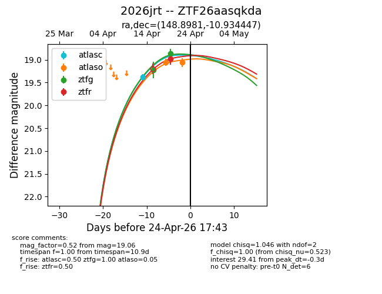
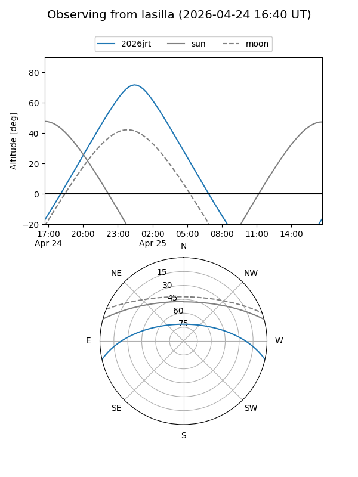
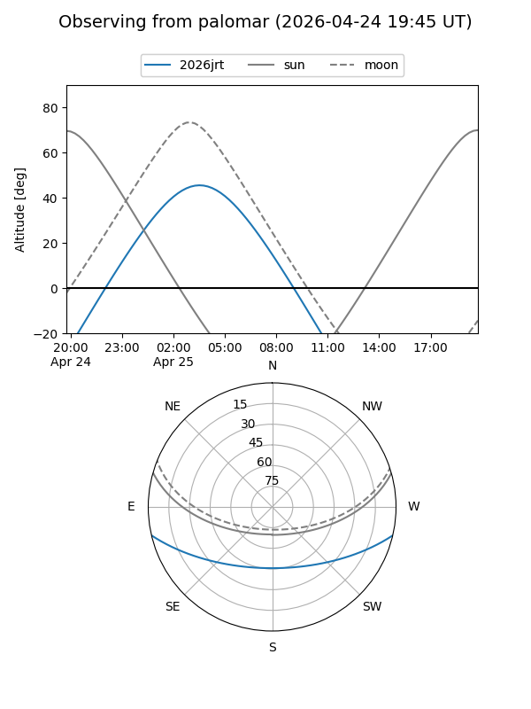
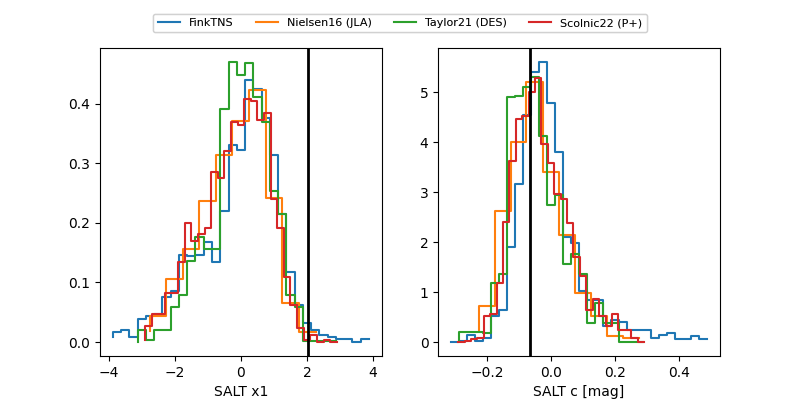

2026jrt
Target 2026jrt at 2026-04-24 17:45
Aliases and brokers:
FINK: link
Lasair: link
ALeRCE: link
TNS: link
YSE: link
alt names
ZTF26aasqkda (ztf,fink_ztf)
2026jrt (tns,yse)
Coordinates:
equatorial (ra, dec) = 148.8981,-10.93445
equatorial (HMS+DMS) = 09:55:35.54,-10:56:04.01
galactic (l, b) = (248.7051,+32.85371)
Flags:
Photometry:
last atlasc=19.38, atlaso=19.06, ztfg=18.86, ztfr=18.97
1 atlasc, 2 atlaso, 2 ztfg, 1 ztfr detections
Lightcurve

Visibility


Additional plots
